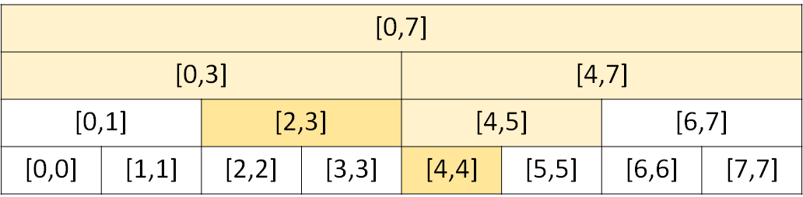

ICPC 台灣賽區 2021
C - Community Service
題意：給定區間 和 筆操作，有兩種類型操作。
1 name L R：在 之間插入name。2 L R：查詢 之間最晚出現的名字，並將其刪除。
作法：將每個 name 編號，利用線段樹維護編號，每個節點除了紀錄代表區間外，還要記錄 1) 所有完全覆蓋該節點區間的編號 vector<int> semiStack 2) 紀錄所有子節點的 semiStack 中最大的編號 (mx)。有兩種修改操作 update 和 rePushup，他們兩個的唯一差異是，前者在 semiStack 新增編號，後者在 semiStack 刪除編號，兩種操作可以分開寫成兩個函式，或合併寫成一個函式，如果合併成一個函式比較好維護，update/rePushup 的 pull，將 sumUp 更新成左右子節點的 sumUp 和 mx。有一種查詢操作 query 查詢 之間最大的編號，查詢除了取所有完全覆蓋該節點區間的 sumUp 和 mx，還要取沿路上所有拜訪過點的 mx，例如下圖中要查詢 的最大值，除了要參考 和 的 sumUp 和 mx，還要參考 、、 和 的 mx。

複雜度分析：所有操作的複雜度為 ，整題時間複雜度為 。
後記：範例程式碼用指標寫的，原本比較喜歡指標的寫法，但參考別人的程式碼後，發現陣列比較好寫，除非要動態開點，不然不需要用指標。
參考程式碼 ( update 和 rePushup 分開寫)
1 2 3 4 5 6 7 8 9 10 11 12 13 14 15 16 17 18 19 20 21 22 23 24 25 26 27 28 29 30 31 32 33 34 35 36 37 38 39 40 41 42 43 44 45 46 47 48 49 50 51 52 53 54 55 56 57 58 59 60 61 62 63 64 65 66 67 68 69 70 71 72 73 74 75 76 77 78 79 80 81 82 83 84 85 86 87 88 89 90 91 92 93 94 95 96 97 98 99 100 101 102 103 104 105 106 107 108 109 110 111 112 113 114 115 116 117 118 119 120 121 122 123 124 125 126 127 128 129 130 131 132 133 134 135 136 137 | |
參考程式碼 ( update 和 rePushup 合併)
1 2 3 4 5 6 7 8 9 10 11 12 13 14 15 16 17 18 19 20 21 22 23 24 25 26 27 28 29 30 31 32 33 34 35 36 37 38 39 40 41 42 43 44 45 46 47 48 49 50 51 52 53 54 55 56 57 58 59 60 61 62 63 64 65 66 67 68 69 70 71 72 73 74 75 76 77 78 79 80 81 82 83 84 85 86 87 88 89 90 91 92 93 94 95 96 97 98 99 100 101 102 103 104 105 106 107 108 109 110 111 112 113 114 115 116 117 118 119 120 121 122 123 | |
D - Largest Remainder
題意：給定 個各位數字，可以隨意排序，求出一個數字，在 之下有最大的值，如果有多組數字符合，輸出最大的值。
解法：狀態 DP， 代表在選取子集合 情況下，是否有 的排列，最大的餘數是 ，另外維護 為在選取子集合 情況下，有 的最大數字，最後的答案就是 。
複雜度分析：有 個狀態，每個狀態需要 次轉移，整題時間複雜度為 。
參考程式碼
1 2 3 4 5 6 7 8 9 10 11 12 13 14 15 16 17 18 19 20 21 22 23 24 25 26 27 28 29 30 31 32 33 34 35 36 37 38 39 40 41 42 43 44 45 46 47 48 49 50 51 52 53 54 55 56 57 58 59 60 61 62 63 64 65 | |